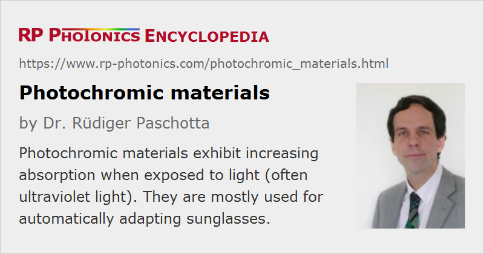

Photochromic Materials
Definition: optical materials which exhibit increased light absorption when being exposed to light
Alternative term: self-darkening materials
More general term: optical materials
German: photochrome Materialien, selbsttönende Gläser
How to cite the article; suggest additional literature
Author: Dr. Rüdiger Paschotta
Photochromic materials are transparent materials which exhibit increased light absorption when they are exposed to light. They can be optical glasses or plastic materials. The photochromic properties usually result from the addition of a photochromic substance to a transparent material.
Typically, such materials are used in sunglasses which automatically adapt to the light conditions: they transmit most light if it is not too bright, but get increasingly dark when exposed to sunlight. The photodarkening can occur within less than a minute; the recovery to the clear state may take several minutes, depending on the temperature.
There are also photochromic windows, which are useful for automatically regulating the illumination with incoming daylight. As an alternative, one may use electrochromic windows, which are controlled with an electric voltage and can therefore be better adjusted to the needs, e.g. also taking into account whether the heating effect of the sunlight is the desirable or not.
Note that there are also various photodarkening effects in optical materials, e.g. some rare-earth-doped fibers, which may be reversible or irreversible.
Operation Principle
Photochromic glasses are often made by embedding silver chloride (AgCl) or another silver halide in microcrystalline form into some glass. When the silver chloride is exposed to ultraviolet light in the UVA spectral region, it forms tiny silver particles which absorb light. That process is reversed by thermally activated processes when the exposure to ultraviolet light ends.
Plastic optics can be made photochromic by adding certain organic dyes such as oxazines or naphthopyrans to a surface layer, applied as a photochromic coating. They also react to ultraviolet light.
For some materials, the wavelength dependence of the light-induced absorption leads to a color. For example, there are pigments which are white in the dark but change to a blue, yellow or red color under intense illumination.
Over longer times, the recovery to the clear state may not be complete due to aging processes.
Questions and Comments from Users
Here you can submit questions and comments. As far as they get accepted by the author, they will appear above this paragraph together with the author’s answer. The author will decide on acceptance based on certain criteria. Essentially, the issue must be of sufficiently broad interest.
Please do not enter personal data here; we would otherwise delete it soon. (See also our privacy declaration.) If you wish to receive personal feedback or consultancy from the author, please contact him e.g. via e-mail.
By submitting the information, you give your consent to the potential publication of your inputs on our website according to our rules. (If you later retract your consent, we will delete those inputs.) As your inputs are first reviewed by the author, they may be published with some delay.
See also: optical materials, optical glasses, optical attenuators, eye protection, photodarkening
and other articles in the category optical materials
|  |
If you like this page, please share the link with your friends and colleagues, e.g. via social media:
These sharing buttons are implemented in a privacy-friendly way!